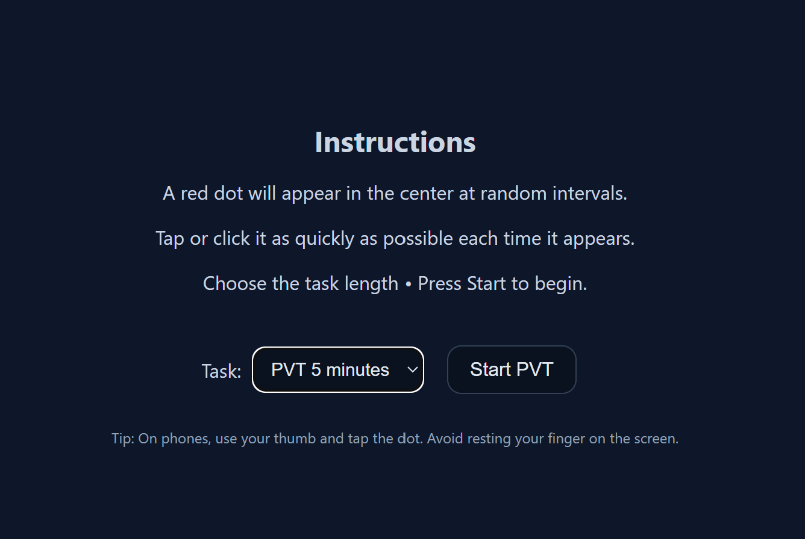

Web-based Psychomotor Vigilance Test
A browser-based implementation of the Psychomotor Vigilance Test — a standardized measure of sustained attention and simple reaction time widely used in fatigue and sleep research.

What it is
Browser-based PVT
Runs entirely in the browser — no installation or hardware needed
Measures
Reaction time & lapses
Standardized metrics consistent with clinical PVT benchmarks
Use case
Vigilance & fatigue research
Accessible tool for field and lab studies alike
The problem
Traditional PVT devices are expensive and lab-bound
Field studies need lightweight, portable assessment tools
Fatigue research requires frequent, low-friction testing
What it does
Measures simple reaction time to randomized visual stimuli
Tracks response speed, lapses, and false starts
Exports results for downstream statistical analysis
Technical approach
Built entirely in JavaScript — no backend required
High-precision timing using the browser Performance API
Configurable trial parameters to match study protocols
Why it matters
Enables PVT administration in any setting with a browser
Lowers the barrier for vigilance and fatigue research
Complements wearable physiological sensing with behavioral data
Technology stack
Try it
Live at adityashanghavi.github.io/PVT